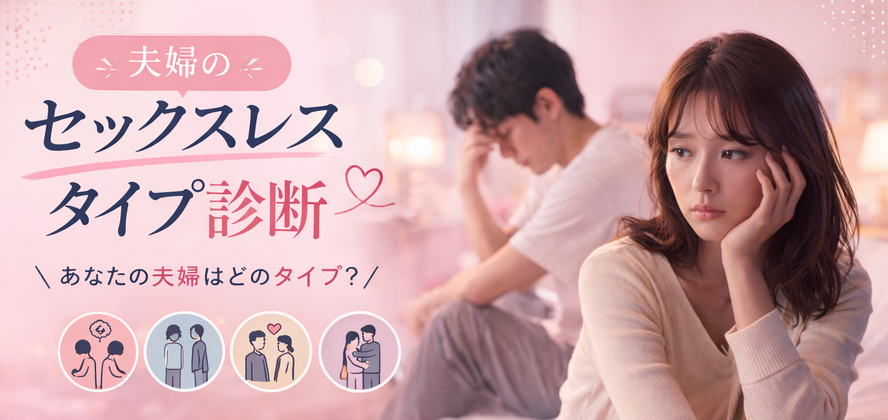

<!doctype html>
<html lang="ja">
<head>
<meta charset="utf-8">
<meta name="viewport" content="width=device-width, initial-scale=1">
<title>夫婦のセックスレスタイプ診断</title>
<meta name="description" content="12の質問で、夫婦の関係が止まりやすい理由を診断。今の状態と最初の一歩がわかります。">
<link rel="canonical" href="https://less-diagnosis.github.io/">
<meta property="og:locale" content="ja_JP">
<meta property="og:type" content="website">
<meta property="og:site_name" content="夫婦のセックスレスタイプ診断">
<meta property="og:title" content="夫婦のセックスレスタイプ診断">
<meta property="og:description" content="12の質問で、夫婦の関係が止まりやすい理由を診断。今の状態と最初の一歩がわかります。">
<meta property="og:url" content="https://less-diagnosis.github.io/">
<meta property="og:image" content="https://less-diagnosis.github.io/eyecatch.png">
<meta property="og:image:secure_url" content="https://less-diagnosis.github.io/eyecatch.png">
<meta property="og:image:type" content="image/png">
<meta property="og:image:width" content="1536">
<meta property="og:image:height" content="728">
<meta property="og:image:alt" content="夫婦のセックスレスタイプ診断">
<meta name="twitter:card" content="summary_large_image">
<meta name="twitter:title" content="夫婦のセックスレスタイプ診断">
<meta name="twitter:description" content="12の質問で、夫婦の関係が止まりやすい理由を診断。今の状態と最初の一歩がわかります。">
<meta name="twitter:image" content="https://less-diagnosis.github.io/eyecatch.png">
<meta name="twitter:image:alt" content="夫婦のセックスレスタイプ診断">
<link rel="preconnect" href="https://fonts.googleapis.com">
<link rel="preconnect" href="https://fonts.gstatic.com" crossorigin>
<link href="https://fonts.googleapis.com/css2?family=Noto+Sans+JP:wght@400;500;700&family=Zen+Maru+Gothic:wght@500;700&display=swap" rel="stylesheet">
<style>
  html, body { margin: 0; padding: 0; }
  body { font-family: "Noto Sans JP", -apple-system, sans-serif; color: #3A322C; }
  button { font-family: inherit; }
  * { box-sizing: border-box; }
</style>
</head>
<body>
<div id="root"></div>

<script src="https://unpkg.com/react@18.3.1/umd/react.development.js" integrity="sha384-hD6/rw4ppMLGNu3tX5cjIb+uRZ7UkRJ6BPkLpg4hAu/6onKUg4lLsHAs9EBPT82L" crossorigin="anonymous"></script>
<script src="https://unpkg.com/react-dom@18.3.1/umd/react-dom.development.js" integrity="sha384-u6aeetuaXnQ38mYT8rp6sbXaQe3NL9t+IBXmnYxwkUI2Hw4bsp2Wvmx4yRQF1uAm" crossorigin="anonymous"></script>
<script src="https://unpkg.com/@babel/standalone@7.29.0/babel.min.js" integrity="sha384-m08KidiNqLdpJqLq95G/LEi8Qvjl/xUYll3QILypMoQ65QorJ9Lvtp2RXYGBFj1y" crossorigin="anonymous"></script>

<script type="text/babel">
const { useState, useEffect, useMemo } = React;
const SITE_URL = 'https://less-diagnosis.github.io/';

// ═══════════════════════════════════════════════
// Symbols
// ═══════════════════════════════════════════════

const SYM_ACCENT = '#C9714E';
const SYM_INK    = '#3A322C';
const SYM_SOFT   = '#B8A896';

function SymbolBase({ size = 140, bg = '#F3EAD9', children }) {
  return (
    <div style={{ width: size, height: size, borderRadius: '50%', background: bg, display: 'flex', alignItems: 'center', justifyContent: 'center' }}>
      <svg width={size * 0.56} height={size * 0.56} viewBox="0 0 100 100" style={{ overflow: 'visible' }}>
        {children}
      </svg>
    </div>
  );
}
const SymLowRisk = (p) => <SymbolBase {...p}><circle cx="50" cy="50" r="34" stroke={SYM_SOFT} strokeWidth="2" fill="none"/><path d="M 30 52 Q 42 66 54 50 T 74 44" stroke={SYM_ACCENT} strokeWidth="4" fill="none" strokeLinecap="round" strokeLinejoin="round"/><circle cx="34" cy="38" r="5" fill={SYM_INK}/><circle cx="66" cy="38" r="5" fill={SYM_INK}/></SymbolBase>;
// TYPE_A: 疲れすれ違い → 遠い2点
const SymA = (p) => <SymbolBase {...p}><circle cx="18" cy="50" r="9" fill={SYM_INK}/><circle cx="82" cy="50" r="9" fill={SYM_ACCENT}/><line x1="32" y1="50" x2="68" y2="50" stroke={SYM_SOFT} strokeWidth="2" strokeDasharray="3 5" strokeLinecap="round"/></SymbolBase>;
// TYPE_B: マンネリ → 同心円
const SymB = (p) => <SymbolBase {...p}><circle cx="50" cy="50" r="40" stroke={SYM_SOFT} strokeWidth="1.5" fill="none"/><circle cx="50" cy="50" r="26" stroke={SYM_INK} strokeWidth="2" fill="none"/><circle cx="50" cy="50" r="10" fill={SYM_ACCENT}/></SymbolBase>;
// TYPE_C: 自然体 → 2本並走線
const SymC = (p) => <SymbolBase {...p}><line x1="15" y1="35" x2="85" y2="35" stroke={SYM_INK} strokeWidth="4" strokeLinecap="round"/><line x1="15" y1="65" x2="85" y2="65" stroke={SYM_ACCENT} strokeWidth="4" strokeLinecap="round"/></SymbolBase>;
// TYPE_D: テンポ不一致 → 交差アーク
const SymD = (p) => <SymbolBase {...p}><path d="M 12 80 Q 50 10 88 80" stroke={SYM_INK} strokeWidth="3" fill="none" strokeLinecap="round"/><path d="M 12 20 Q 50 90 88 20" stroke={SYM_ACCENT} strokeWidth="3" fill="none" strokeLinecap="round"/></SymbolBase>;
// TYPE_E: 踏み出せない → 軌道+中心
const SymE = (p) => <SymbolBase {...p}><circle cx="50" cy="50" r="38" stroke={SYM_INK} strokeWidth="2" fill="none"/><circle cx="50" cy="50" r="14" fill={SYM_ACCENT}/></SymbolBase>;
// TYPE_F: 育児余裕不足 → 地平線+太陽
const SymF = (p) => <SymbolBase {...p}><line x1="10" y1="62" x2="90" y2="62" stroke={SYM_INK} strokeWidth="2" strokeLinecap="round"/><circle cx="50" cy="44" r="14" fill={SYM_ACCENT}/></SymbolBase>;
// TYPE_G: 世話焼き → 対話弧
const SymG = (p) => <SymbolBase {...p}><path d="M 40 30 A 22 22 0 0 0 40 70" stroke={SYM_INK} strokeWidth="4" fill="none" strokeLinecap="round"/><path d="M 60 30 A 22 22 0 0 1 60 70" stroke={SYM_ACCENT} strokeWidth="4" fill="none" strokeLinecap="round"/></SymbolBase>;
// TYPE_H: すれ違い → 重なる2円
const SymH = (p) => <SymbolBase {...p}><circle cx="32" cy="50" r="22" fill={SYM_INK}/><circle cx="68" cy="50" r="22" fill={SYM_ACCENT}/></SymbolBase>;

const Symbols = {
  low_risk: SymLowRisk,
  fatigue_low: SymA,
  undecided: SymF,
  stagnation_low: SymB,
  stagnation_high: SymC,
  distance_low: SymE,
  distance_high: SymG,
  mismatch_low: SymD,
  mismatch_high: SymH,
  TYPE_A: SymA, TYPE_B: SymB, TYPE_C: SymC, TYPE_D: SymD,
  TYPE_E: SymE, TYPE_F: SymF, TYPE_G: SymG, TYPE_H: SymH,
};

const RESULT_ICON_IMAGES = {
  low_risk: 'icon-low-risk.png',
  fatigue_low: 'icon-fatigue-low.png',
  stagnation_low: 'icon-stagnation-low.png',
  distance_low: 'icon-distance-low.png',
  mismatch_low: 'icon-mismatch-low.png',
  stagnation_high: 'icon-stagnation-high.png',
  distance_high: 'icon-distance-high.png',
  undecided: 'icon-undecided.png',
  mismatch_high: 'icon-mismatch-high.png',
};

function ResultIcon({ typeId, Fallback, size = 140 }) {
  const [imageFailed, setImageFailed] = useState(false);
  const src = RESULT_ICON_IMAGES[typeId];

  if (!src || imageFailed) return <Fallback size={size}/>;

  return (
    <div style={{ width: size, height: size, borderRadius: '50%', overflow: 'hidden', background: '#F3EAD9', display: 'flex', alignItems: 'center', justifyContent: 'center' }}>
       setImageFailed(true)}
        style={{ width: '100%', height: '100%', objectFit: 'cover', display: 'block' }}
      />
    </div>
  );
}

// ═══════════════════════════════════════════════
// Data — 12問スコア式診断
// ═══════════════════════════════════════════════

const ANSWER_OPTIONS = [
  { key: 2, label: 'はい' },
  { key: 1, label: 'どちらとも' },
  { key: 0, label: 'いいえ' },
];

const QUESTIONS = [
  { id: 'Q1', axis: 'fatigue', text: '夜になると、関係のことより睡眠や休むことを優先したくなる' },
  { id: 'Q2', axis: 'fatigue', text: '寝る時間や寝室がずれていて、自然に近づく時間が少ない' },
  { id: 'Q3', axis: 'fatigue', text: '家事や仕事、子育てが終わると、夫婦のことを考える余力がない' },
  { id: 'Q4', axis: 'stagnation', text: 'ふたりの会話が、連絡事項や用件だけになりやすい' },
  { id: 'Q5', axis: 'stagnation', text: 'SEXやスキンシップの流れが毎回同じで、新鮮さがない' },
  { id: 'Q6', axis: 'stagnation', text: '夫婦で過ごすことより、自分の予定や一人時間を優先することが増えた' },
  { id: 'Q7', axis: 'distance', text: '誘おうとしても、「どうせ断られる」と思って言い出せない' },
  { id: 'Q8', axis: 'distance', text: 'スキンシップをしようとすると、どちらかが身構える感じがある' },
  { id: 'Q9', axis: 'distance', text: '本音を言うと責め合いになりそうで、話題を避けてしまう' },
  { id: 'Q10', axis: 'mismatch', text: 'スキンシップが減った理由を聞いても、「別に」「わからない」で終わってしまう' },
  { id: 'Q11', axis: 'mismatch', text: 'SEXやスキンシップの話をしても、いつも同じところで平行線になる' },
  { id: 'Q12', axis: 'mismatch', text: '相手を思って言ったことが、責めているように受け取られることがある' },
];

const AXIS_ORDER = ['fatigue', 'stagnation', 'distance', 'mismatch'];
const TYPE_KEYS = ['fatigue_low','stagnation_low','distance_low','mismatch_low','stagnation_high','distance_high','undecided','mismatch_high'];

const AXIS_TO_TYPES = {
  fatigue: { low: 'fatigue_low', high: 'fatigue_low' },
  stagnation: { low: 'stagnation_low', high: 'stagnation_high' },
  distance: { low: 'distance_low', high: 'distance_high' },
  mismatch: { low: 'mismatch_low', high: 'mismatch_high' },
};

const AXIS_HIGH_THRESHOLD = {
  fatigue: 4,
  stagnation: 4,
  distance: 4,
  mismatch: 4,
};

function scoreAnswers(answers) {
  const scores = AXIS_ORDER.reduce((acc, axis) => ({ ...acc, [axis]: 0 }), {});
  const values = [];
  const answerValues = {};

  QUESTIONS.forEach(q => {
    const value = Number(answers[q.id]);
    if (Number.isFinite(value)) {
      scores[q.axis] += value;
      values.push(value);
      answerValues[q.id] = value;
    }
  });

  const sorted = AXIS_ORDER
    .map(axis => ({ axis, score: scores[axis] }))
    .sort((a, b) => b.score - a.score);
  const top = sorted[0];
  const second = sorted[1];
  const allAnswered = values.length === QUESTIONS.length;
  const totalScore = values.reduce((sum, value) => sum + value, 0);
  const allMiddleAnswers = allAnswered && values.every(value => value === 1);
  const scoreKinds = new Set(AXIS_ORDER.map(axis => scores[axis]));
  const exactScoreTie = allAnswered && top.score > 0 && scoreKinds.size === 1;
  const middleAnswers = values.filter(value => value === 1).length;
  const highAxes = sorted.filter(item => item.score >= 4).length;
  const topTieAxes = sorted.filter(item => item.score === top.score && item.score >= 3).length;
  const broadMixedCauses = allAnswered && top.score <= 4 && top.score - second.score <= 1 && highAxes >= 2 && middleAnswers >= 4;

  if (allAnswered && totalScore <= 3) {
    return 'low_risk';
  }

  if (allMiddleAnswers || exactScoreTie || topTieAxes >= 2 || broadMixedCauses) {
    return 'undecided';
  }

  if (top.axis === 'stagnation') {
    const routineScore = (answerValues.Q4 || 0) + (answerValues.Q5 || 0);
    const priorityDropScore = answerValues.Q6 || 0;
    const priorityDropIsMain = priorityDropScore === 2 || (priorityDropScore === 1 && routineScore <= 2 && top.score >= 3);
    return priorityDropIsMain ? 'stagnation_high' : 'stagnation_low';
  }

  const intensity = top.score >= AXIS_HIGH_THRESHOLD[top.axis] ? 'high' : 'low';
  return AXIS_TO_TYPES[top.axis][intensity];
}

const TYPES = {
  low_risk: {
    name: 'レス度低めタイプ',
    cause: '小さな違和感',
    tagline: '大きな詰まりより、小さな違和感が先に来る',
    description: '今回の回答では、疲れ・マンネリ・距離・価値観のズレのどれかが強く出ている状態ではなさそうです。\nただし、「悩んでいない」という意味ではありません。頻度、タイミング、温度差、言い出しにくさなど、まだ言葉にしきれていない一点が引っかかっている可能性があります。\n今は原因を決めつけるより、自分が何を寂しいと感じているのかを小さく切り分ける段階です。',
    empathy: ['大きな喧嘩はないのに物足りなさがある', 'レスと言っていいのか迷う', '自分だけが気にしている気がする', 'このままでいいのか少し引っかかる'],
    firstStep: 'まず「回数」ではなく、「何が足りないと感じるか」をひとつだけ言葉にする。安心感、誘われること、触れ合い、会話など、欲しいものを小さく分けてから伝える。',
  },
  fatigue_low: {
    name: 'おつかれ優先タイプ',
    cause: '余白切れ',
    tagline: 'ふたりの時間より、回復が先に来る',
    description: '気持ちは残っていても、仕事・家事・育児などで余白がなく、夫婦の時間にエネルギーを回せない状態です。\n原因は愛情不足ではなく、疲労で「近づく力」と「受け取る力」が落ちていることです。\nその結果、スキンシップや関係づくりが後回しになりやすくなります。',
    empathy: ['夜はまず休むことを優先したい', '嫌いではないのに後回しになる', '休日も回復だけで終わりやすい', '誘われても応える余裕がない'],
    firstStep: '改善より、まずコンディション回復を優先する。疲れ切った夜を避け、朝や昼など余白のある時間に5分だけ会話や軽いスキンシップを戻す。',
  },
  stagnation_low: {
    name: 'マンネリタイプ',
    cause: 'マンネリ',
    tagline: 'ときめきより、いつもの流れが先に来る',
    description: '関係は保ちたい気持ちがあるのに、会話やスキンシップが手順のようになっている状態です。\n原因は嫌悪ではなく、慣れによって新鮮さや期待感が薄れていることです。\nその結果、スキンシップや関係づくりが作業のようになりやすくなります。',
    empathy: ['会話が用件だけになりやすい', 'スキンシップの流れが毎回似ている', 'きっかけがないまま時間が過ぎる', '不満は強くないが物足りない'],
    firstStep: '大きく変えようとせず、場所・時間・誘い方のどれか1つだけ変える。まずは普段しない雑談や軽い外出で、いつもの流れを少し崩す。',
  },
  distance_low: {
    name: '誘えない様子見タイプ',
    cause: '拒否不安',
    tagline: '近づきたい気持ちより、断られる怖さが先に来る',
    description: '誘いたい気持ちはあるのに、断られた時の痛さや気まずさが先に浮かび、行動が止まっている状態です。\n原因は性欲の有無より、「また拒まれるかもしれない」という予測が強くなっていることです。\nその結果、スキンシップや関係づくりの入口で止まりやすくなります。',
    empathy: ['どうせ断られると思ってしまう', '触れる前に相手の顔色を見る', '誘う言葉が出てこない', '近づくほど緊張する'],
    firstStep: 'いきなり誘うより、隣に座る・肩に触れる・笑って話すなど、断られにくい小さな接点から戻す。安心して関われる範囲を探す。',
  },
  mismatch_low: {
    name: '伝わり違いタイプ',
    cause: '受け取りズレ',
    tagline: '言葉の中身より、受け取り方のズレが先に来る',
    description: '相手を思って言った言葉が、責め・要求・否定として受け取られやすい状態です。\n原因は愛情不足ではなく、会話の目的や前提がずれたまま伝え合っていることです。\nその結果、スキンシップや関係づくりの話もすれ違いやすくなります。',
    empathy: ['思いやりが責め言葉に聞こえる', '説明しても違う意味で伝わる', '話すほど誤解が残る', '会話のあとに疲れが残る'],
    firstStep: '結論を急がず、「私はこういう意味で言った」「私はこう受け取った」を確認する。正しさより、受け取り方の差を見える化する。',
  },
  stagnation_high: {
    name: '後回し日常タイプ',
    cause: '優先度低下',
    tagline: '不満より、後回しが先に来る',
    description: '変化をつける以前に、相手への関心や夫婦時間の優先度が少しずつ下がっている状態です。\n原因はひとつの事件ではなく、関わらない日常に慣れて、接点の価値が下がっていることです。\nその結果、スキンシップや関係づくりを選ぶ理由が弱くなりやすいです。',
    empathy: ['休日も別々に過ごすことが増えた', '相手への興味が前より薄い', '記念日や変化に反応しにくい', '何も起きないまま距離が広がる'],
    firstStep: '原因探しより、接点の回数を増やす。1日5分の会話、短いLINE、同じものを食べるなど、小さく関わる習慣を戻す。',
  },
  distance_high: {
    name: 'ふれない平和タイプ',
    cause: '波風回避',
    tagline: '本音より、波風を立てないことが先に来る',
    description: '問題があると分かっていても、話す・触れる・誘うこと自体を避けている状態です。\n原因は無関心ではなく、向き合った時に傷つくことや空気が重くなることを避けたい気持ちです。\nその結果、スキンシップや関係づくりに踏み出しにくくなります。',
    empathy: ['本音の話題を避けてしまう', '空気が重くなるのが怖い', '深い話をしないほうが楽', '現状維持でやり過ごしている'],
    firstStep: '解決まで持っていこうとせず、「最近少し気になってる」など一言だけ共有する。重い話し合いではなく、入口を小さくする。',
  },
  undecided: {
    name: '原因迷子タイプ',
    cause: '原因混在',
    tagline: '結論より、気持ちの整理が先に来る',
    description: '疲れ・不満・寂しさ・諦めが混ざり、どれか一つを原因として選びにくい状態です。\n決められないのは弱いからではなく、複数の要因が同時に絡んでいるからです。\nその結果、スキンシップや関係づくりも何から戻せばいいか分かりにくくなります。',
    empathy: ['考えても結論が出ない', '何が一番つらいのか分からない', '話すべきか迷って終わる', 'このままでいいのか揺れている'],
    firstStep: 'まず結論を出さない。「今は寂しい」「迷っている」など、判断ではなく現在地だけを言葉にする。',
  },
  mismatch_high: {
    name: '平行線会話タイプ',
    cause: '価値観対立',
    tagline: '理解より、正しさの衝突が先に来る',
    description: '会話はしているのに、何を大事にするかが噛み合わず、同じ議題で対立が繰り返される状態です。\n原因は会話量の不足ではなく、前提の違いを整理しないまま話し合っていることです。\nその結果、スキンシップや関係づくりの話も対立に変わりやすくなります。',
    empathy: ['話し合いが同じところで止まる', '理解されない感覚が強い', '責め合いになりやすい', '会話のあとに距離を感じる'],
    firstStep: 'まず勝ち負けの話し合いを止める。意見をぶつける前に、「何を大事にしているか」をひとつずつ確認する。',
  },
};
// ═══════════════════════════════════════════════
// Design tokens & helpers
// ═══════════════════════════════════════════════

const PALETTE = { bg: '#FAF5EE', card: '#FFFFFF', cardWarm: '#F3EAD9', ink: '#3A322C', sub: '#8A7F72', line: '#E8DDCB', accent: '#C9714E', accentSoft: '#E8B89E' };
const GOLD = '#C8A878';
const GOLD_DEEP = '#A8864F';

const luxeBg = `radial-gradient(ellipse at 50% 0%, #FBE4D4 0%, transparent 55%), radial-gradient(ellipse at 80% 90%, #F3E0C8 0%, transparent 50%), linear-gradient(180deg, #FCF3E7 0%, ${PALETTE.bg} 100%)`;

// Centered page wrapper — max-width on desktop, full on mobile
function Page({ children, style = {} }) {
  return (
    <div style={{
      minHeight: '100vh',
      background: luxeBg,
      display: 'flex',
      flexDirection: 'column',
      alignItems: 'center',
      ...style,
    }}>
      <div style={{ width: '100%', maxWidth: 640, flex: 1, display: 'flex', flexDirection: 'column' }}>
        {children}
      </div>
    </div>
  );
}

function Sparkle({ top, left, size = 10, delay = 0 }) {
  return (
    <div style={{ position: 'absolute', top, left, width: size, height: size, animation: `sparkleAnim 3s ease-in-out ${delay}s infinite`, pointerEvents: 'none' }}>
      <svg viewBox="0 0 24 24" width={size} height={size}><path d="M12 0 L14 10 L24 12 L14 14 L12 24 L10 14 L0 12 L10 10 Z" fill={GOLD}/></svg>
    </div>
  );
}

function GoldDivider({ width = 80, style = {} }) {
  return (
    <div style={{ display: 'flex', alignItems: 'center', justifyContent: 'center', gap: 8, ...style }}>
      <div style={{ width, height: 1, background: `linear-gradient(to right, transparent, ${GOLD})` }}/>
      <span style={{ color: GOLD, fontSize: 8 }}>✦</span>
      <div style={{ width, height: 1, background: `linear-gradient(to left, transparent, ${GOLD})` }}/>
    </div>
  );
}

function GoldCorner({ top, bottom, left, right, flipX, flipY }) {
  const id = `gc${top}${bottom}${left}${right}`;
  return (
    <div style={{ position: 'absolute', top: top ?? 'auto', bottom: bottom ?? 'auto', left: left ?? 'auto', right: right ?? 'auto', width: 36, height: 36, transform: `scale(${flipX ? -1 : 1}, ${flipY ? -1 : 1})`, opacity: 0.7, pointerEvents: 'none' }}>
      <svg viewBox="0 0 36 36" width="36" height="36">
        <defs><linearGradient id={id} x1="0" y1="0" x2="1" y2="1"><stop offset="0%" stopColor="#EBD6AE"/><stop offset="100%" stopColor={GOLD_DEEP}/></linearGradient></defs>
        <path d="M 6 4 Q 18 4 18 16 M 4 6 Q 4 18 16 18 M 10 10 L 14 14" stroke={`url(#${id})`} strokeWidth="1.2" fill="none" strokeLinecap="round"/>
        <circle cx="6" cy="6" r="1.5" fill={GOLD}/>
      </svg>
    </div>
  );
}

// ═══════════════════════════════════════════════
// Hero Screen
// ═══════════════════════════════════════════════

function HeroScreen({ onStart }) {
  return (
    <Page>
      <style>{`
        @keyframes sparkleAnim { 0%,100%{opacity:.3;transform:scale(.8) rotate(0deg)} 50%{opacity:1;transform:scale(1.1) rotate(20deg)} }
        @keyframes ctaPulse { 0%,100%{transform:scale(1)} 50%{transform:scale(1.02)} }
        @keyframes ctaShine { 0%,100%{transform:translateX(-100%)} 60%{transform:translateX(100%)} }
        @media(min-width:640px){ .hero-title{ font-size:36px !important } .hero-sub{ font-size:17px !important } }
      `}</style>

      <div style={{ padding: '48px 28px 56px', position: 'relative', overflow: 'hidden' }}>
        <Sparkle top={50} left={20} size={10} delay={0}/>
        <Sparkle top={80} left="88%" size={8} delay={0.6}/>
        <Sparkle top={200} left={18} size={6} delay={1.2}/>
        <Sparkle top={300} left="90%" size={9} delay={0.3}/>

        {/* Eyebrow */}
        <div style={{ display: 'flex', alignItems: 'center', justifyContent: 'center', gap: 12, marginBottom: 24 }}>
          <div style={{ width: 32, height: 1, background: `linear-gradient(to right, transparent, ${GOLD})` }}/>
          <div style={{ fontFamily: '"Zen Maru Gothic", serif', fontSize: 10, letterSpacing: 4, color: GOLD_DEEP, fontWeight: 700 }}>✦  COUPLE  TYPE  ✦</div>
          <div style={{ width: 32, height: 1, background: `linear-gradient(to left, transparent, ${GOLD})` }}/>
        </div>

        {/* Title */}
        <h1 className="hero-title" style={{
          fontFamily: '"Zen Maru Gothic", sans-serif', fontWeight: 700,
          fontSize: 30, lineHeight: 1.2, textAlign: 'center', margin: '0 0 16px', letterSpacing: 3,
          background: `linear-gradient(135deg, ${GOLD_DEEP} 0%, ${PALETTE.accent} 50%, ${GOLD_DEEP} 100%)`,
          WebkitBackgroundClip: 'text', WebkitTextFillColor: 'transparent', backgroundClip: 'text',
        }}>
          夫婦のセックスレスタイプ診断
        </h1>

        <p className="hero-sub" style={{ textAlign: 'center', fontSize: 15, fontWeight: 700, color: PALETTE.accent, letterSpacing: 1, margin: '0 0 32px' }}>
          12の質問で、ふたりのカタチがわかる
        </p>

        {/* Eye-catch */}
        <div style={{
          width: '100%', aspectRatio: '16/7', borderRadius: 20, overflow: 'hidden', marginBottom: 32,
          background: `linear-gradient(135deg, #FBE4D4 0%, #F5D7BF 100%)`,
          boxShadow: `0 10px 28px rgba(168,134,79,.15)`, border: `1px solid rgba(200,168,120,.3)`,
          display: 'flex', alignItems: 'center', justifyContent: 'center',
        }}>
          
        </div>

        {/* Primary CTA */}
        <button onClick={onStart} style={{
          width: '100%', padding: '22px 20px',
          background: `linear-gradient(135deg, ${PALETTE.accent} 0%, #E07A52 40%, #D98560 70%, ${PALETTE.accent} 100%)`,
          color: '#FFF8F1', border: 'none', borderRadius: 999,
          fontSize: 18, fontWeight: 800, fontFamily: 'inherit', letterSpacing: 3,
          cursor: 'pointer', position: 'relative', overflow: 'hidden', marginBottom: 14,
          boxShadow: `0 12px 32px rgba(201,113,78,.4), inset 0 1px 0 rgba(255,255,255,.4)`,
          animation: 'ctaPulse 2.2s ease-in-out infinite',
        }}>
          <span style={{ position: 'absolute', inset: 0, background: 'linear-gradient(100deg, transparent 30%, rgba(255,255,255,.35) 50%, transparent 70%)', animation: 'ctaShine 2.8s ease-in-out infinite' }}/>
          <span style={{ display: 'inline-flex', alignItems: 'center', gap: 12, position: 'relative' }}>
            <span style={{ color: GOLD, fontSize: 14 }}>✦</span>
            無料で診断をはじめる
            <span style={{ fontSize: 20 }}>→</span>
          </span>
        </button>

        <div style={{ textAlign: 'center', fontSize: 11, letterSpacing: 2, color: GOLD_DEEP, fontWeight: 700, marginBottom: 28, opacity: 0.85 }}>
          ✨ 登録不要  ·  全項目選択式  ·  2分
        </div>

        {/* Meta cards */}
        <div style={{ display: 'flex', justifyContent: 'center', gap: 1, marginBottom: 36, border: `1px solid rgba(200,168,120,.5)`, borderRadius: 16, overflow: 'hidden', boxShadow: `0 8px 32px rgba(168,134,79,.12)` }}>
          {[['12','質問数'],['2分','所要時間'],['8','タイプ数']].map(([n, l], i, arr) => (
            <div key={l} style={{
              flex: 1, textAlign: 'center',
              padding: '22px 8px 20px',
              background: `linear-gradient(180deg, #FFFDF8 0%, #FBF3E4 100%)`,
              borderRight: i < arr.length - 1 ? `1px solid rgba(200,168,120,.35)` : 'none',
              position: 'relative',
            }}>
              {/* top accent line */}
              <div style={{ position: 'absolute', top: 0, left: 0, right: 0, height: 2, background: `linear-gradient(to right, transparent 0%, ${GOLD} 50%, transparent 100%)` }}/>
              {/* number */}
              <div style={{
                fontFamily: '"Zen Maru Gothic", serif',
                fontSize: 32, fontWeight: 700, lineHeight: 1, letterSpacing: -1,
                background: `linear-gradient(160deg, #8B6914 0%, ${GOLD} 45%, ${PALETTE.accent} 100%)`,
                WebkitBackgroundClip: 'text', WebkitTextFillColor: 'transparent', backgroundClip: 'text',
                marginBottom: 10,
              }}>{n}</div>
              {/* divider */}
              <div style={{ width: 20, height: 1, margin: '0 auto 10px', background: `linear-gradient(to right, transparent, rgba(168,134,79,.6), transparent)` }}/>
              {/* label */}
              <div style={{
                fontSize: 9, letterSpacing: 2.5, color: '#8B6914',
                fontWeight: 700, fontFamily: '"Zen Maru Gothic", serif', opacity: 0.8,
              }}>{l}</div>
              {/* bottom accent */}
              <div style={{ position: 'absolute', bottom: 0, left: 0, right: 0, height: 1, background: `linear-gradient(to right, transparent 0%, rgba(200,168,120,.3) 50%, transparent 100%)` }}/>
            </div>
          ))}
        </div>

        <p style={{ fontSize: 15, lineHeight: 2.0, color: PALETTE.ink, textAlign: 'center', margin: '0 0 32px', letterSpacing: 0.5, opacity: 0.75 }}>
          なんとなく距離を感じるけど、<br/>原因が分からない人へ。
        </p>

        <div style={{ display: 'flex', alignItems: 'center', justifyContent: 'center', flexWrap: 'wrap', gap: '8px 14px', fontSize: 12, color: PALETTE.sub, marginTop: 20, letterSpacing: 0.5 }}>
          <span>🔒 匿名OK</span>
          <span>·</span>
          <span>📝 情報入力なし</span>
          <span>·</span>
          <span>⚡ 2分で完了</span>
        </div>
      </div>

      {/* Footer */}
      <div style={{ padding: '24px', textAlign: 'center', fontSize: 10, letterSpacing: 2, color: PALETTE.sub, opacity: 0.6, fontFamily: '"Zen Maru Gothic", serif' }}>
        © 2026  夫婦のセックスレスタイプ診断
      </div>
    </Page>
  );
}

// ═══════════════════════════════════════════════
// Quiz Screen
// ═══════════════════════════════════════════════

const Q_TINTS = [
  { bg: 'linear-gradient(180deg, #FBE8E0 0%, #F7DDD4 100%)', accent: '#E8A8A0' },
  { bg: 'linear-gradient(180deg, #F0E4D4 0%, #EAD9BE 100%)', accent: '#C8A878' },
  { bg: 'linear-gradient(180deg, #E8E0D4 0%, #DDD0C0 100%)', accent: '#B89870' },
  { bg: 'linear-gradient(180deg, #FBEDD6 0%, #F5E1C6 100%)', accent: '#D9A978' },
];

function QuestionCard({ index, total, question, answer, onAnswer, tint, active, dim }) {
  const answered = answer !== undefined && answer !== null;
  const open = active || answered;

  return (
    <div style={{
      background: tint.bg, borderRadius: 20,
      padding: open ? '20px 18px 22px' : '16px 18px', marginBottom: 12,
      border: `1px solid rgba(255,255,255,.6)`,
      boxShadow: open ? `0 1px 2px rgba(58,50,44,.04), 0 10px 28px rgba(58,50,44,.06)` : `0 1px 2px rgba(58,50,44,.03)`,
      opacity: dim ? 0.5 : 1, transition: 'all .3s ease',
      position: 'relative', overflow: 'hidden',
    }}>
      <div style={{ display: 'flex', justifyContent: 'space-between', alignItems: 'center', marginBottom: open ? 8 : 0 }}>
        <div style={{ display: 'inline-flex', alignItems: 'center', gap: 8 }}>
          <span style={{ fontFamily: '"Zen Maru Gothic", sans-serif', fontSize: open ? 19 : 16, fontWeight: 700, color: PALETTE.ink, letterSpacing: 1 }}>Q{index}</span>
          {answered && <span style={{ width: 16, height: 16, borderRadius: '50%', background: `linear-gradient(135deg, ${GOLD}, ${PALETTE.accent})`, color: '#FFF8F1', fontSize: 10, fontWeight: 700, display: 'flex', alignItems: 'center', justifyContent: 'center' }}>✓</span>}
        </div>
        <div style={{ fontSize: 11, color: PALETTE.sub, letterSpacing: 1 }}>{index} / {total}</div>
      </div>

      {open && (
        <>
          <p style={{ fontSize: 15, lineHeight: 1.75, margin: '4px 0 18px', color: PALETTE.ink, letterSpacing: 0.3, fontWeight: 700, textAlign: 'center' }}>{question.text}</p>
          <div style={{ display: 'flex', gap: 10 }}>
            {ANSWER_OPTIONS.map(opt => {
              const isActive = answer === opt.key;
              const otherPicked = answered && !isActive;
              return (
                <button key={opt.key} onClick={() => onAnswer(opt.key)} style={{
                  flex: 1, minHeight: 56,
                  background: otherPicked ? 'rgba(240,235,228,.85)' : 'rgba(255,255,255,.95)',
                  color: otherPicked ? '#B8A896' : PALETTE.ink,
                  border: isActive ? `2px solid ${PALETTE.accent}` : `1.5px solid ${tint.accent}`,
                  borderRadius: 14, fontSize: 13, lineHeight: 1.45,
                  fontWeight: 700, fontFamily: 'inherit', letterSpacing: 0.3,
                  cursor: 'pointer', padding: '12px 6px', textAlign: 'center',
                  boxShadow: isActive ? `0 6px 16px rgba(201,113,78,.18)` : otherPicked ? 'none' : `0 2px 6px rgba(58,50,44,.04)`,
                  transition: 'all .2s ease',
                  display: 'flex', alignItems: 'center', justifyContent: 'center',
                }}>{opt.label}</button>
              );
            })}
          </div>
        </>
      )}
    </div>
  );
}

function QuizScreen({ answers, setAnswers, onSubmit, onBack }) {
  const [activeIdx, setActiveIdx] = useState(0);
  // answers は { [id]: 0|1|2 } なのでキー数で判定
  const answered = QUESTIONS.filter(q => answers[q.id] !== undefined && answers[q.id] !== null).length;
  const total = QUESTIONS.length;
  const canSubmit = answered === total;

  const handleAnswer = (qid, val, idx) => {
    const next = { ...answers, [qid]: val };
    setAnswers(next);
    if (idx + 1 < total) setTimeout(() => setActiveIdx(idx + 1), 320);
  };

  return (
    <Page>
      <style>{`
        @keyframes sparkleAnim { 0%,100%{opacity:.3;transform:scale(.8)} 50%{opacity:1;transform:scale(1.1)} }
        @keyframes bubbleIn { 0%{opacity:0;transform:translateY(-6px) scale(.96)} 100%{opacity:1;transform:translateY(0) scale(1)} }
      `}</style>

      {/* Sticky header */}
      <div style={{ position: 'sticky', top: 0, zIndex: 10, background: `linear-gradient(to bottom, #FCF3E7 70%, transparent)`, padding: '16px 28px 16px' }}>
        <div style={{ display: 'flex', justifyContent: 'space-between', alignItems: 'center', marginBottom: 12 }}>
          <button onClick={onBack} style={{ background: 'rgba(255,255,255,.7)', border: `1px solid rgba(200,168,120,.3)`, color: GOLD_DEEP, padding: '7px 16px', borderRadius: 999, fontSize: 13, cursor: 'pointer', fontWeight: 600, letterSpacing: 0.5, backdropFilter: 'blur(6px)' }}>← もどる</button>
          <div style={{ display: 'flex', alignItems: 'center', gap: 6, padding: '6px 14px', borderRadius: 999, background: 'rgba(255,255,255,.7)', border: `1px solid ${GOLD}`, backdropFilter: 'blur(6px)', fontSize: 12, fontWeight: 700, color: GOLD_DEEP, letterSpacing: 1 }}>
            {answered} <span style={{ opacity: 0.4 }}>/</span> {total}
          </div>
        </div>
        <div style={{ height: 6, background: 'rgba(232,221,203,.6)', borderRadius: 999, overflow: 'hidden', border: `1px solid rgba(200,168,120,.2)` }}>
          <div style={{ height: '100%', width: `${(answered / total) * 100}%`, background: `linear-gradient(90deg, ${GOLD} 0%, ${PALETTE.accent} 100%)`, borderRadius: 999, transition: 'width .4s ease', boxShadow: `0 0 8px rgba(201,113,78,.4)` }}/>
        </div>
      </div>

      <div style={{ padding: '8px 28px 0' }}>
        <div style={{ display: 'flex', alignItems: 'center', justifyContent: 'center', gap: 10, marginBottom: 10 }}>
          <div style={{ width: 24, height: 1, background: `linear-gradient(to right, transparent, ${GOLD})` }}/>
          <div style={{ fontFamily: '"Zen Maru Gothic", serif', fontSize: 9, letterSpacing: 3, fontWeight: 700, color: GOLD_DEEP }}>✦  12  QUESTIONS  ✦</div>
          <div style={{ width: 24, height: 1, background: `linear-gradient(to left, transparent, ${GOLD})` }}/>
        </div>
        <h2 style={{ fontFamily: '"Zen Maru Gothic", sans-serif', fontSize: 22, fontWeight: 700, margin: '0 0 6px', textAlign: 'center', letterSpacing: 1 }}>
          いくつか、<span style={{ background: `linear-gradient(135deg, ${GOLD_DEEP}, ${PALETTE.accent})`, WebkitBackgroundClip: 'text', WebkitTextFillColor: 'transparent', backgroundClip: 'text' }}>教えてください</span>。
        </h2>
        <p style={{ fontSize: 12, color: PALETTE.sub, margin: '0 0 20px', lineHeight: 1.8, textAlign: 'center', opacity: 0.85 }}>正解はありません。直感で答えて大丈夫です。</p>

        {QUESTIONS.map((q, i) => (
          <QuestionCard key={q.id} index={i + 1} total={total} question={q} answer={answers[q.id]} onAnswer={(val) => handleAnswer(q.id, val, i)} tint={Q_TINTS[i % Q_TINTS.length]} active={i === activeIdx} dim={i > activeIdx} />
        ))}
      </div>

      {/* Sticky submit */}
      <div style={{ position: 'sticky', bottom: 0, padding: '16px 28px 28px', background: `linear-gradient(to top, #FAF0E0 55%, transparent)`, zIndex: 10, marginTop: 8 }}>
        <button onClick={onSubmit} disabled={!canSubmit} style={{
          width: '100%', padding: '20px 20px',
          background: canSubmit ? `linear-gradient(135deg, ${PALETTE.accent} 0%, #D98560 50%, ${PALETTE.accent} 100%)` : 'rgba(232,221,203,.8)',
          color: canSubmit ? '#FFF8F1' : '#B8A896', border: 'none', borderRadius: 999,
          fontSize: 16, fontWeight: 700, fontFamily: 'inherit', letterSpacing: 2,
          cursor: canSubmit ? 'pointer' : 'default',
          boxShadow: canSubmit ? `0 8px 24px rgba(201,113,78,.4)` : 'none',
          transition: 'all .2s ease',
        }}>
          {canSubmit ? <span style={{ display: 'inline-flex', alignItems: 'center', gap: 10 }}><span style={{ color: GOLD }}>✦</span> 結果をみる <span style={{ color: GOLD }}>✦</span></span> : `あと ${total - answered} 問`}
        </button>
      </div>
    </Page>
  );
}

// ═══════════════════════════════════════════════
// Result Screen
// ═══════════════════════════════════════════════

function getResultMeta(typeId) {
  if (typeId === 'low_risk') {
    return { label: 'LOW', display: 'レス度低め', typeNum: 0, isStandard: false };
  }

  const typeNum = Math.max(0, TYPE_KEYS.indexOf(typeId)) + 1;
  const label = `TYPE ${String.fromCharCode(64 + typeNum)}`;
  return { label, display: `${label} / 08`, typeNum, isStandard: true };
}

function getTypeLabel(typeId) {
  return getResultMeta(typeId).label;
}

function getResultShareText(t, typeId) {
  return `夫婦のセックスレスタイプ診断\n${getTypeLabel(typeId)} ${t.name}\nレスにつながる主な原因：${t.cause}\n「${t.tagline}」\n\n${t.description.replace(/\n/g, '\n')}\n\n最初の一歩：${t.firstStep}`;
}

function copyTextFallback(text) {
  const area = document.createElement('textarea');
  area.value = text;
  area.setAttribute('readonly', '');
  area.style.position = 'fixed';
  area.style.left = '-9999px';
  document.body.appendChild(area);
  area.select();
  const copied = document.execCommand('copy');
  document.body.removeChild(area);
  return copied;
}

async function shareResult(t, typeId) {
  const text = getResultShareText(t, typeId);
  const data = { title: '夫婦のセックスレスタイプ診断', text };

  if (navigator.share) {
    try {
      await navigator.share(data);
      return;
    } catch (error) {
      if (error && error.name === 'AbortError') return;
    }
  }

  try {
    if (navigator.clipboard && window.isSecureContext) {
      await navigator.clipboard.writeText(text);
    } else {
      copyTextFallback(text);
    }
    alert('診断結果をコピーしました。');
  } catch (error) {
    const copied = copyTextFallback(text);
    alert(copied ? '診断結果をコピーしました。' : 'コピーできませんでした。結果文を選択してコピーしてください。');
  }
}

function getDiagnosisShareText() {
  return `夫婦のセックスレスタイプ診断\n12の質問で、今の関係が止まりやすい理由がわかります。\n\nパートナーにもやってもらう：\n${SITE_URL}`;
}

async function shareDiagnosis() {
  const text = getDiagnosisShareText();
  const data = {
    title: '夫婦のセックスレスタイプ診断',
    text: '12の質問で、今の関係が止まりやすい理由がわかります。',
    url: SITE_URL,
  };

  if (navigator.share) {
    try {
      await navigator.share(data);
      return;
    } catch (error) {
      if (error && error.name === 'AbortError') return;
    }
  }

  try {
    if (navigator.clipboard && window.isSecureContext) {
      await navigator.clipboard.writeText(text);
    } else {
      copyTextFallback(text);
    }
    alert('診断URLをコピーしました。パートナーに送ってみてください。');
  } catch (error) {
    const copied = copyTextFallback(text);
    alert(copied ? '診断URLをコピーしました。パートナーに送ってみてください。' : 'コピーできませんでした。URLを選択してコピーしてください。');
  }
}

function drawRoundRect(ctx, x, y, w, h, r) {
  ctx.beginPath();
  ctx.moveTo(x + r, y);
  ctx.lineTo(x + w - r, y);
  ctx.quadraticCurveTo(x + w, y, x + w, y + r);
  ctx.lineTo(x + w, y + h - r);
  ctx.quadraticCurveTo(x + w, y + h, x + w - r, y + h);
  ctx.lineTo(x + r, y + h);
  ctx.quadraticCurveTo(x, y + h, x, y + h - r);
  ctx.lineTo(x, y + r);
  ctx.quadraticCurveTo(x, y, x + r, y);
  ctx.closePath();
}

function drawWrappedText(ctx, text, x, y, maxWidth, lineHeight, maxLines = 99) {
  const chars = String(text).split('');
  const lines = [];
  let line = '';

  chars.forEach(ch => {
    if (ch === '\n') {
      lines.push(line);
      line = '';
      return;
    }
    const test = line + ch;
    if (ctx.measureText(test).width > maxWidth && line) {
      lines.push(line);
      line = ch.trimStart();
    } else {
      line = test;
    }
  });
  if (line) lines.push(line);

  lines.slice(0, maxLines).forEach((ln, i) => ctx.fillText(ln, x, y + i * lineHeight));
  return y + Math.min(lines.length, maxLines) * lineHeight;
}

function saveResultImage(t, typeId) {
  const canvas = document.createElement('canvas');
  canvas.width = 1080;
  canvas.height = 1350;
  const ctx = canvas.getContext('2d');
  const resultMeta = getResultMeta(typeId);
  const typeLabel = resultMeta.label;

  const bg = ctx.createLinearGradient(0, 0, 0, canvas.height);
  bg.addColorStop(0, '#FCF3E7');
  bg.addColorStop(1, '#FAF5EE');
  ctx.fillStyle = bg;
  ctx.fillRect(0, 0, canvas.width, canvas.height);

  ctx.fillStyle = 'rgba(201,113,78,.14)';
  ctx.beginPath();
  ctx.arc(920, 140, 230, 0, Math.PI * 2);
  ctx.fill();
  ctx.fillStyle = 'rgba(200,168,120,.18)';
  ctx.beginPath();
  ctx.arc(150, 1180, 260, 0, Math.PI * 2);
  ctx.fill();

  ctx.save();
  drawRoundRect(ctx, 80, 80, 920, 1190, 42);
  ctx.fillStyle = '#FFFBF4';
  ctx.shadowColor = 'rgba(168,134,79,.22)';
  ctx.shadowBlur = 32;
  ctx.shadowOffsetY = 16;
  ctx.fill();
  ctx.restore();

  ctx.fillStyle = '#A8864F';
  ctx.font = '700 28px "Noto Sans JP", sans-serif';
  ctx.textAlign = 'center';
  ctx.fillText('夫婦のセックスレスタイプ診断', 540, 155);

  ctx.fillStyle = '#C9714E';
  ctx.font = '700 32px "Noto Sans JP", sans-serif';
  ctx.fillText(resultMeta.display, 540, 230);

  ctx.fillStyle = '#3A322C';
  ctx.font = '700 72px "Zen Maru Gothic", "Noto Sans JP", sans-serif';
  ctx.fillText(t.name, 540, 330);

  ctx.fillStyle = '#A8864F';
  ctx.font = '700 27px "Noto Sans JP", sans-serif';
  ctx.fillText(`レスにつながる主な原因：${t.cause}`, 540, 385);

  ctx.fillStyle = '#C9714E';
  ctx.font = '700 36px "Noto Sans JP", sans-serif';
  drawWrappedText(ctx, `「${t.tagline}」`, 540, 440, 780, 48, 2);

  ctx.textAlign = 'left';
  ctx.fillStyle = '#3A322C';
  ctx.font = '400 30px "Noto Sans JP", sans-serif';
  let y = drawWrappedText(ctx, t.description, 150, 535, 780, 48, 5) + 38;

  ctx.fillStyle = '#A8864F';
  ctx.font = '700 28px "Noto Sans JP", sans-serif';
  ctx.fillText('あなたの傾向', 150, y);
  y += 52;

  ctx.fillStyle = '#3A322C';
  ctx.font = '400 29px "Noto Sans JP", sans-serif';
  t.empathy.forEach(item => {
    ctx.fillStyle = '#C9714E';
    ctx.fillText('・', 150, y);
    ctx.fillStyle = '#3A322C';
    y = drawWrappedText(ctx, item, 190, y, 720, 42, 2) + 10;
  });

  y += 18;
  ctx.fillStyle = '#A8864F';
  ctx.font = '700 28px "Noto Sans JP", sans-serif';
  ctx.fillText('最初の一歩', 150, y);
  y += 52;

  ctx.fillStyle = '#3A322C';
  ctx.font = '400 29px "Noto Sans JP", sans-serif';
  drawWrappedText(ctx, t.firstStep, 150, y, 780, 44, 5);

  ctx.textAlign = 'center';
  ctx.fillStyle = '#8A7F72';
  ctx.font = '400 24px "Noto Sans JP", sans-serif';
  ctx.fillText('夫婦のセックスレスタイプ診断', 540, 1215);

  const link = document.createElement('a');
  link.href = canvas.toDataURL('image/png');
  link.download = `夫婦のセックスレスタイプ診断_${typeLabel}_${t.name}.png`;
  document.body.appendChild(link);
  link.click();
  document.body.removeChild(link);
}
function ResultScreen({ typeId, onRestart }) {
  const t = TYPES[typeId] || TYPES[TYPE_KEYS[0]];
  const Sym = Symbols[typeId] || Symbols[TYPE_KEYS[0]];
  const resultMeta = getResultMeta(typeId);
  const handleSaveImage = () => saveResultImage(t, typeId);
  const handleShare = () => shareResult(t, typeId);
  const handleShareDiagnosis = () => shareDiagnosis();

  return (
    <Page>
      <style>{`@keyframes sparkleAnim{0%,100%{opacity:.3;transform:scale(.8) rotate(0deg)}50%{opacity:1;transform:scale(1.1) rotate(20deg)}}`}</style>

      <div style={{ padding: '32px 28px 48px', position: 'relative' }}>
        <Sparkle top={30} left={16} size={8} delay={0}/>
        <Sparkle top={80} left="90%" size={6} delay={0.5}/>
        <Sparkle top={500} left={12} size={7} delay={1}/>

        {/* Top bar */}
        <div style={{ display: 'flex', justifyContent: 'space-between', alignItems: 'center', marginBottom: 24 }}>
          <div style={{ display: 'inline-flex', alignItems: 'center', gap: 6, padding: '6px 14px', borderRadius: 999, background: 'rgba(255,255,255,.7)', border: `1px solid ${GOLD}`, fontSize: 10, letterSpacing: 2, fontWeight: 700, color: GOLD_DEEP, backdropFilter: 'blur(6px)' }}>
            <span style={{ color: PALETTE.accent }}>✦</span> YOUR  RESULT
          </div>
          <button onClick={onRestart} style={{ background: 'rgba(255,255,255,.7)', border: `1px solid rgba(200,168,120,.3)`, color: GOLD_DEEP, fontSize: 12, cursor: 'pointer', padding: '6px 14px', borderRadius: 999, fontFamily: 'inherit', fontWeight: 600, letterSpacing: 0.5, backdropFilter: 'blur(6px)' }}>↻ もう一度</button>
        </div>

        {/* Result card */}
        <div style={{
          background: `radial-gradient(ellipse at 50% 0%, rgba(251,228,212,.6) 0%, transparent 60%), linear-gradient(180deg, #fff 0%, #FFFBF4 100%)`,
          borderRadius: 28, padding: '24px 28px 32px',
          boxShadow: `0 2px 6px rgba(58,50,44,.04), 0 20px 48px rgba(168,134,79,.15)`,
          position: 'relative', overflow: 'hidden', border: `1px solid rgba(200,168,120,.25)`,
        }}>
          <GoldCorner top={0} left={0}/>
          <GoldCorner top={0} right={0} flipX={true}/>
          <GoldCorner bottom={0} left={0} flipY={true}/>
          <GoldCorner bottom={0} right={0} flipX={true} flipY={true}/>

          <div style={{ display: 'flex', justifyContent: 'space-between', alignItems: 'center', padding: '8px 2px 0' }}>
            <div style={{ fontFamily: '"Zen Maru Gothic", serif', fontSize: 10, letterSpacing: 3, fontWeight: 700, color: GOLD_DEEP }}>{resultMeta.display}</div>
            <div style={{ display: 'flex', gap: 4 }}>
              {[...Array(8)].map((_,i) => <div key={i} style={{ width: 5, height: 5, borderRadius: '50%', background: resultMeta.isStandard && i+1===resultMeta.typeNum ? PALETTE.accent : 'rgba(200,168,120,.35)' }}/>)}
            </div>
          </div>

          {/* Symbol */}
          <div style={{ display: 'flex', justifyContent: 'center', marginTop: 24, marginBottom: 18, position: 'relative' }}>
            <div style={{ position: 'absolute', width: 200, height: 200, borderRadius: '50%', background: 'radial-gradient(circle, rgba(251,228,212,.8) 0%, transparent 65%)', top: '50%', left: '50%', transform: 'translate(-50%,-50%)' }}/>
            <div style={{ padding: 5, borderRadius: '50%', background: `linear-gradient(135deg, #EBD6AE 0%, ${GOLD} 50%, ${GOLD_DEEP} 100%)`, boxShadow: `0 8px 24px rgba(168,134,79,.2)`, position: 'relative', zIndex: 1 }}>
              <ResultIcon typeId={typeId} Fallback={Sym} size={140}/>
            </div>
          </div>

          <div style={{ display: 'flex', alignItems: 'center', justifyContent: 'center', gap: 8, marginBottom: 12 }}>
            <div style={{ width: 32, height: 1, background: `linear-gradient(to right, transparent, ${GOLD})` }}/>
            <span style={{ fontSize: 9, letterSpacing: 3, color: GOLD_DEEP, fontWeight: 700 }}>あなたたちは</span>
            <div style={{ width: 32, height: 1, background: `linear-gradient(to left, transparent, ${GOLD})` }}/>
          </div>

          <h1 style={{ fontFamily: '"Zen Maru Gothic", sans-serif', fontSize: 34, fontWeight: 700, textAlign: 'center', margin: '0 0 12px', letterSpacing: 2, background: `linear-gradient(135deg, ${PALETTE.ink} 0%, ${GOLD_DEEP} 50%, ${PALETTE.ink} 100%)`, WebkitBackgroundClip: 'text', WebkitTextFillColor: 'transparent', backgroundClip: 'text' }}>{t.name}</h1>

          <div style={{ display: 'flex', justifyContent: 'center', marginBottom: 14 }}>
            <div style={{ display: 'inline-flex', alignItems: 'center', gap: 6, padding: '7px 13px', borderRadius: 999, background: 'rgba(251,233,214,.72)', border: `1px solid rgba(201,113,78,.24)`, color: GOLD_DEEP, fontSize: 11, fontWeight: 700, letterSpacing: 0.6 }}>
              <span style={{ color: PALETTE.accent }}>原因</span>
              <span>：</span>
              <span>{t.cause}</span>
            </div>
          </div>

          <p style={{ fontFamily: '"Zen Maru Gothic", sans-serif', fontSize: 16, fontWeight: 700, lineHeight: 1.6, textAlign: 'center', margin: '0 0 20px', color: PALETTE.accent, letterSpacing: 1.5 }}>「 {t.tagline} 」</p>

          <GoldDivider width={60} style={{ marginBottom: 22 }}/>

          <p style={{ fontSize: 14, lineHeight: 2.0, textAlign: 'center', margin: '0 0 26px', color: PALETTE.ink, letterSpacing: 0.4, opacity: 0.88, whiteSpace: 'pre-line' }}>{t.description}</p>

          {/* Empathy */}
          <div style={{ background: `linear-gradient(135deg, #FBE9D6 0%, ${PALETTE.cardWarm} 100%)`, borderRadius: 18, padding: '20px 22px', marginBottom: 20, border: `1px solid rgba(200,168,120,.25)`, boxShadow: 'inset 0 1px 0 rgba(255,255,255,.6)' }}>
            <div style={{ display: 'flex', alignItems: 'center', justifyContent: 'center', gap: 8, marginBottom: 14 }}>
              <div style={{ width: 20, height: 1, background: `linear-gradient(to right, transparent, ${GOLD})` }}/>
              <div style={{ fontFamily: '"Zen Maru Gothic", serif', fontSize: 10, letterSpacing: 2.5, color: GOLD_DEEP, fontWeight: 700 }}>あなたの傾向</div>
              <div style={{ width: 20, height: 1, background: `linear-gradient(to left, transparent, ${GOLD})` }}/>
            </div>
            {t.empathy.map((e, i) => (
              <div key={i} style={{ display: 'flex', gap: 12, alignItems: 'flex-start', padding: '7px 0', fontSize: 14, lineHeight: 1.7, color: PALETTE.ink, letterSpacing: 0.3 }}>
                <span style={{ color: GOLD_DEEP, fontSize: 10, flexShrink: 0, marginTop: 5 }}>✦</span>
                <span>{e}</span>
              </div>
            ))}
          </div>

          {/* First step */}
          <div style={{ background: 'rgba(255,255,255,.6)', border: `1.5px dashed ${PALETTE.accentSoft}`, borderRadius: 18, padding: '20px 20px 18px' }}>
            <div style={{ display: 'flex', alignItems: 'center', justifyContent: 'center', gap: 6, marginBottom: 12 }}>
              <span style={{ color: PALETTE.accent }}>✦</span>
              <div style={{ fontFamily: '"Zen Maru Gothic", serif', fontSize: 11, letterSpacing: 2, background: `linear-gradient(135deg, ${GOLD_DEEP}, ${PALETTE.accent})`, WebkitBackgroundClip: 'text', WebkitTextFillColor: 'transparent', backgroundClip: 'text', fontWeight: 700 }}>FIRST  STEP · 最初の一歩</div>
              <span style={{ color: PALETTE.accent }}>✦</span>
            </div>
            <p style={{ fontSize: 14, lineHeight: 1.9, margin: 0, color: PALETTE.ink, letterSpacing: 0.3, textAlign: 'center' }}>{t.firstStep}</p>
          </div>

          <div style={{ display: 'flex', alignItems: 'center', justifyContent: 'center', gap: 8, marginTop: 24 }}>
            <div style={{ width: 24, height: 1, background: `linear-gradient(to right, transparent, ${GOLD})` }}/>
            <div style={{ fontSize: 9, letterSpacing: 3, color: GOLD_DEEP, fontWeight: 700 }}>夫婦のセックスレスタイプ診断</div>
            <div style={{ width: 24, height: 1, background: `linear-gradient(to left, transparent, ${GOLD})` }}/>
          </div>
        </div>

        {/* Share */}
        <p style={{ fontFamily: '"Zen Maru Gothic", sans-serif', fontSize: 13, fontWeight: 700, color: GOLD_DEEP, textAlign: 'center', lineHeight: 1.7, letterSpacing: 0.5, margin: '20px 0 10px' }}>「これ今の自分かも」と思ったら保存</p>
        <div style={{ display: 'flex', gap: 12, marginBottom: 12 }}>
          <button onClick={handleSaveImage} style={{ flex: 1, padding: '15px 10px', background: 'rgba(255,255,255,.75)', color: PALETTE.ink, border: `1px solid rgba(200,168,120,.35)`, borderRadius: 999, fontSize: 14, fontWeight: 600, fontFamily: 'inherit', cursor: 'pointer', display: 'flex', alignItems: 'center', justifyContent: 'center', gap: 8, backdropFilter: 'blur(6px)' }}>
            <span>📷</span>画像で保存
          </button>
          <button onClick={handleShare} style={{ flex: 1, padding: '15px 10px', background: 'rgba(255,255,255,.75)', color: PALETTE.ink, border: `1px solid rgba(200,168,120,.35)`, borderRadius: 999, fontSize: 14, fontWeight: 600, fontFamily: 'inherit', cursor: 'pointer', display: 'flex', alignItems: 'center', justifyContent: 'center', gap: 8, backdropFilter: 'blur(6px)' }}>
            <span>✕</span>結果をシェア
          </button>
        </div>
        <button onClick={handleShareDiagnosis} style={{ width: '100%', padding: '15px 14px', marginBottom: 20, background: `linear-gradient(135deg, rgba(255,255,255,.86) 0%, rgba(251,233,214,.9) 100%)`, color: PALETTE.ink, border: `1.5px solid rgba(201,113,78,.35)`, borderRadius: 999, fontSize: 14, fontWeight: 700, fontFamily: 'inherit', cursor: 'pointer', display: 'flex', alignItems: 'center', justifyContent: 'center', gap: 8, backdropFilter: 'blur(6px)', boxShadow: '0 8px 22px rgba(168,134,79,.12)' }}>
          <span style={{ color: PALETTE.accent }}>✦</span>パートナーに診断を送る
        </button>

        {/* CTA note */}
        <div style={{
          background: `radial-gradient(ellipse at 20% 0%, rgba(201,113,78,.25) 0%, transparent 55%), linear-gradient(135deg, #2F2722 0%, #3A322C 100%)`,
          color: '#FBF6ED', borderRadius: 24, padding: '28px 26px',
          border: `1px solid rgba(200,168,120,.3)`, boxShadow: `0 16px 40px rgba(58,50,44,.25)`,
          position: 'relative', overflow: 'hidden',
        }}>
          <div style={{ position: 'absolute', top: 14, right: 18, color: GOLD, fontSize: 12, opacity: 0.7 }}>✦</div>
          <div style={{ position: 'absolute', bottom: 14, left: 18, color: GOLD, fontSize: 9, opacity: 0.5 }}>✦</div>
          <div style={{ display: 'flex', alignItems: 'center', gap: 8, marginBottom: 14 }}>
            <div style={{ width: 16, height: 1, background: `linear-gradient(to right, transparent, ${GOLD})` }}/>
            <div style={{ fontSize: 10, letterSpacing: 3, fontWeight: 700, color: GOLD }}>CONTINUE  READING</div>
          </div>
          <h3 style={{ fontFamily: '"Zen Maru Gothic", sans-serif', fontSize: 20, fontWeight: 700, margin: '0 0 12px', lineHeight: 1.6, letterSpacing: 0.5 }}>
            あなたのタイプを、<br/>
            <span style={{ background: `linear-gradient(135deg, #EBD6AE, ${GOLD})`, WebkitBackgroundClip: 'text', WebkitTextFillColor: 'transparent', backgroundClip: 'text' }}>もう少し深く</span>読み解く。
          </h3>
          <p style={{ fontSize: 13, lineHeight: 1.8, margin: '0 0 20px', color: 'rgba(251,246,237,.65)', letterSpacing: 0.3 }}>タイプ別の関係の整え方、すれ違いの直し方、<br/>1万字のnoteで続きをどうぞ。</p>
          <button style={{
            width: '100%', padding: '17px 18px',
            background: `linear-gradient(135deg, ${PALETTE.accent} 0%, #D98560 50%, ${PALETTE.accent} 100%)`,
            color: '#FFF8F1', border: 'none', borderRadius: 999,
            fontSize: 15, fontWeight: 700, letterSpacing: 1.5, fontFamily: 'inherit', cursor: 'pointer',
            boxShadow: `0 6px 18px rgba(201,113,78,.35)`,
          }}>
            <span style={{ display: 'inline-flex', alignItems: 'center', gap: 8 }}>
              <span style={{ color: GOLD }}>✦</span> 続きを読む (note) <span>→</span>
            </span>
          </button>
        </div>

        {/* Footer */}
        <div style={{ textAlign: 'center', fontSize: 10, letterSpacing: 2, color: PALETTE.sub, opacity: 0.6, fontFamily: '"Zen Maru Gothic", serif', marginTop: 36 }}>
          © 2026  夫婦のセックスレスタイプ診断
        </div>
      </div>
    </Page>
  );
}

// ═══════════════════════════════════════════════
// App
// ═══════════════════════════════════════════════

function App() {
  const [screen, setScreen] = useState(() => localStorage.getItem('cdt13:screen') || 'hero');
  const [answers, setAnswers] = useState(() => {
    try { return JSON.parse(localStorage.getItem('cdt13:answers') || '{}'); } catch { return {}; }
  });

  useEffect(() => { localStorage.setItem('cdt13:screen', screen); }, [screen]);
  useEffect(() => { localStorage.setItem('cdt13:answers', JSON.stringify(answers)); }, [answers]);
  useEffect(() => {
    requestAnimationFrame(() => window.scrollTo({ top: 0, left: 0, behavior: 'auto' }));
  }, [screen]);

  const computedType = useMemo(() => scoreAnswers(answers), [answers]);

  if (screen === 'quiz') return <QuizScreen answers={answers} setAnswers={setAnswers} onSubmit={() => setScreen('result')} onBack={() => setScreen('hero')} />;
  if (screen === 'result') return <ResultScreen typeId={computedType} onRestart={() => { setAnswers({}); setScreen('hero'); }} />;
  return <HeroScreen onStart={() => setScreen('quiz')} />;
}

ReactDOM.createRoot(document.getElementById('root')).render(<App />);
</script>
</body>
</html>
